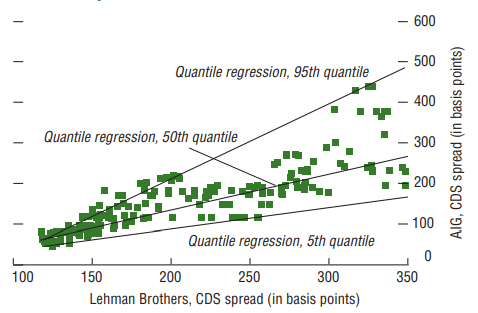
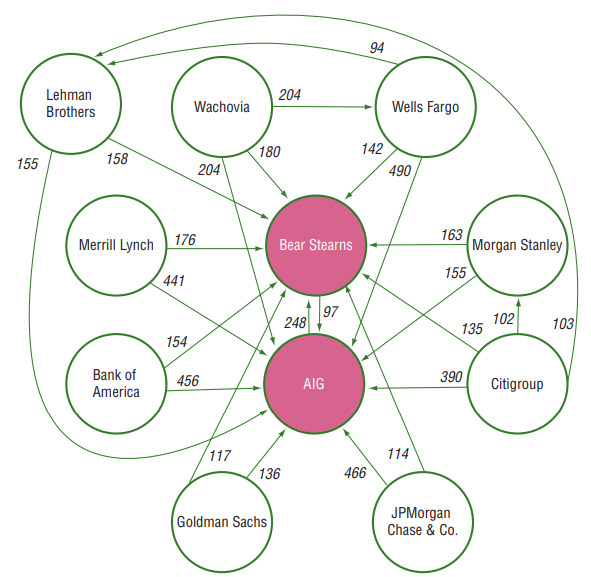

시스템 리스크 분석: (2-4) 금융기관 부도확률 위험 측정방법
Systemic Risk Measure - Probability of Default Model
서상원 (2018)
시스템리스크 측정 방법 중 금융기관의 부도와 같은 위험사건을 명시적으로 정의하는 측정하는 법을 알아본다.
부도확률모형 위험 측정방법
CDS-CoRisk: Credit default swap-CoRisk
금융기관간 위험도의 상호연계성을 CDS 스프레드를 이용하여 측정
CoRisk는 quantile regression 기법을 사용하여 한 금융기관의 위험 사건 여부가 다른 금융기관에 미치는 영향을 측정
- \(CDS_{it}=\alpha_{\tau}+\sum^{K}_{k=1}\beta_{\tau k}R_{kt}+\gamma_{\tau j}CDS_{jt}+\epsilon_{it}\)
- \(\tau\)는 백분위수, \(R\)은 \(K\)개의 위험요인
- 위험요인: 일반적인 리스크 프리미엄, 수익률곡선의 기울기, LIBOR 스프레드, 단기자금시장의 유동성 상황, VIX 등
CDS 스프레드가 높을수록 고위험도를 나타내며, 95 percentile을 상회하는 경우를 위험 사건이 발생한 것으로 간주
CoRisk (금융기관 \(j\)에 대한 \(i\)의 조건부)
- \(Conditional CoRisk_t(i,j) = 100 \times (\frac{CDS(95|j)}{CDS_i(95)}-1 )\)
- \(CDS(95|j)=\alpha_{95}+\sum^{K}_{k=1}\beta_{95k}R_{kt}+\gamma_{95j}CDS_j(95)\)
- CoRisk는 한 금융기관의 CDS 스프레드의 무조건부 95 percentile과 다른 금융기관에서 위험 사건이 발생한 경우에 대한 조건부 95 percentile간의 상대적 차이를 나타냄


Option-iPoD : Option-implied probability of default
옵션가격으로부터 부도확률을 추정
- Merton(1974)의 구조모형을 이용
- 금융기관의 (시장가치 기준) 자산을 \(V\), 부채를 \(D\), 자본을 \(E\)라고 하면, 금융기관의 부도사건은 \(V<D\)로 정의
- 자본은 부채를 먼저 상환하고 남는 부분에 대한 청구권으로서 \(E=\max(V-D,0)\)
- 이는 마치 기초자산을 \(V\)로, 행사가격을 \(D\)로 하는 콜옵션과 동일한 구조
- 부도확률(PoD):
- \(PoD = \int^{D}_0 fdV\)
- 확률밀도함수 \(f\) 는 CIMDO 방법을 이용하여 다음과 같이 추정
- \(\min \int^{\infty}_0 f(V)ln(\frac{f(V)}{f^0(V)})dV\)
- 사후 (posterior) 밀도함수 \(f\)는 사전(prior) 밀도함수 \(f^0\) 와의 cross-entropy를 최소화
- 사후 밀도함수의 조건
- 자본이 콜옵션 가치로 평가됨
- \(E=\int^{\infty}_{D}(V-D)f(V)dV\)
- 행사가격이 \(K\)인 주식옵션의 가격이 \(C\)일 때 이 옵션가격과 일치성의 가짐
- \(C=\int^{\infty}_{D+K}(V-D-K)f(V)dV\)
- 확률밀도함수의 면적은 1
- \(1=\int^{\infty}_{0}f(V)dV\)
- 자본이 콜옵션 가치로 평가됨
- 사후 밀도함수
- \(f(V) = f^0(V)\exp [ \lambda_0-1+\lambda_1e^{-rT}I_{V>D}(V-D)+\lambda_2e^{-rT}I_{V>D+K}(V-D-K) ]\)
- \(\lambda_0\)는 확률밀도함수의 면적이 1이라는 조건에 대한 라그랑지 승수, \(\lambda_1\)는 자본이 콜옵션의 가치로 평가된다는 조건에 대한 라그랑지 승수, \(\lambda_2\)는 주식옵션의 가격이 만족하여야 하는 조건에 대한 라그랑지 승수
CCA: Contingent claim approach
주가에 기업의 부도확률에 대한 정보가 내재되어 있다는 점에 기반하여 주가 정보를 이용하여 내재된 부도확률에 대한 정보를 얻는 방법
Merton(1974)의 콜옵션 구조모형(\(E=\max(V-D,0)\))에서 주식이 일종의 콜옵션과 같은 조건부 증권(contingent claim)으로 봄
금융기관의 자산 \(V\)가 다음과 같이 geometric 브라운 운동으로 따른다고 가정
- \(dV=\mu Vdt+\sigma Vdz\)
- 주가 \(E\) 는 행사가격이 \(D_t\), 기초자산 가격이 \(V_t\)인 BSM(Black-Scholes-Merton) 콜옵션가격과 동일
금융기관의 자산에 대한 확률과정의 모수 \(\mu, \sigma\)를 금융기관의 주가에 대한 정보를 이용하여 추정
- 다음의 우도함수를 극대화하도록 추정
- \(L(\mu,\sigma)=-\frac{m-1}{2}\ln(2\pi)-\frac{m-1}{2}\ln\sigma^2 - \sum^{m}_{t=2}\ln \hat{V}_t(\sigma) - \sum^{m}_{t=2}\ln N(\hat{d}_t) - \frac{1}{2\sigma^2}\sum^{m}_{t=2}[\ln\frac{\hat{V}_t(\sigma)}{\hat{V}_{t-1}(\sigma)}]^2\)
- \(\hat{V}_t(\sigma)\)는 BSM의 콜옵션가격 공식에서 구해지는 해
금융기관간의 연계성을 다음과 같이 지수가중 이동평균 방법을 이용하여 모형화
- 금융기관 \(i, j\)의 공분산: \(\sigma_{ij,t} = \lambda\sigma_{ij,t-1}+(1-\lambda)\ln(\frac{V^i_t}{V^i_{t-1}})\ln(\frac{V^j_t}{V^j_{t-1}})\)
Lehar(2005)는 시스템리스크 측정지표로서 전체 금융시스템 내에 금융기관중 부실금융기관의 수가 일정 비율 (예를 들어, 10%) 이상일 확률을 나타내는 SIN과 자산기준 부실금융기관의 비중이 일정 비율 이상일 확률을 나타내는 SIV 등을 제시
참고문헌
서상원. (2018). 시스템리스크의 측정과 관리: 서베이와 제언. 금융안정연구, 19(1), 131-232.
Capuano, C. (2008). The option-iPoD. International Monetary Fund.
Chan-Lau, J. A., Espinosa, M., Giesecke, K., & Solé, J. A. (2009). Assessing the systemic implications of financial linkages. IMF global financial stability report, 2.
Huang, X., Zhou, H., & Zhu, H. (2009). A framework for assessing the systemic risk of major financial institutions. Journal of Banking & Finance, 33(11), 2036-2049.
Lehar, A. (2005). Measuring systemic risk: A risk management approach. Journal of Banking & Finance, 29(10), 2577-2603.